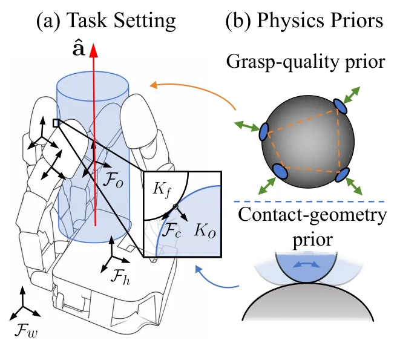
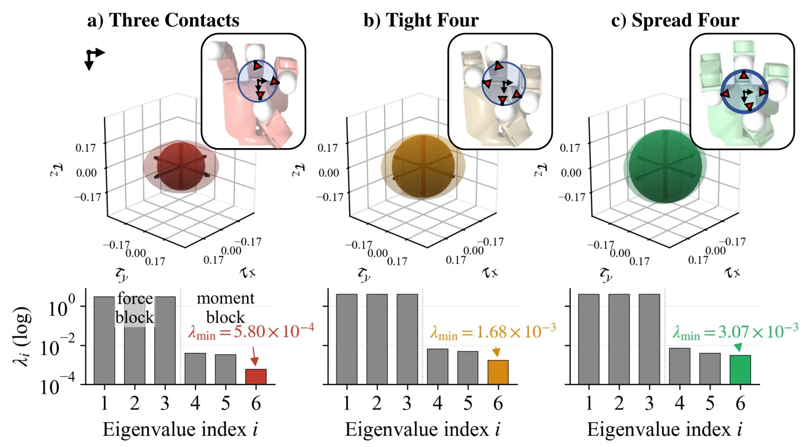
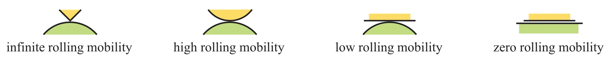
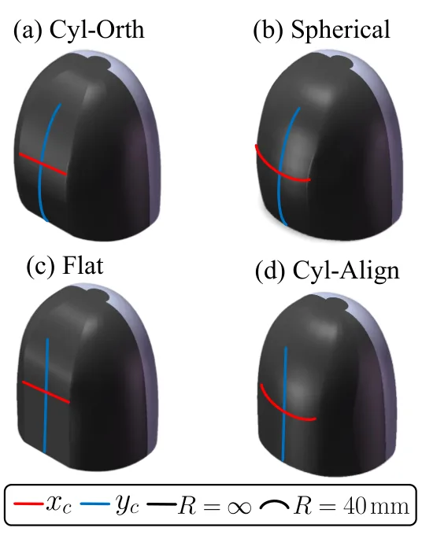
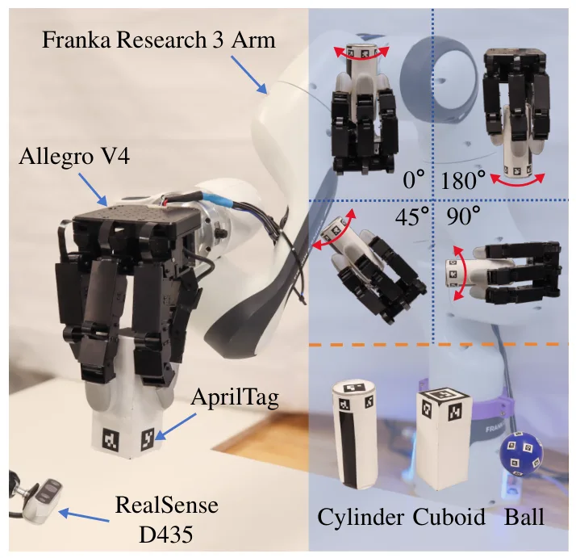
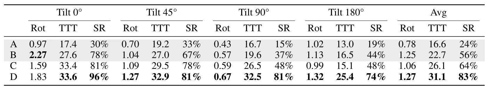
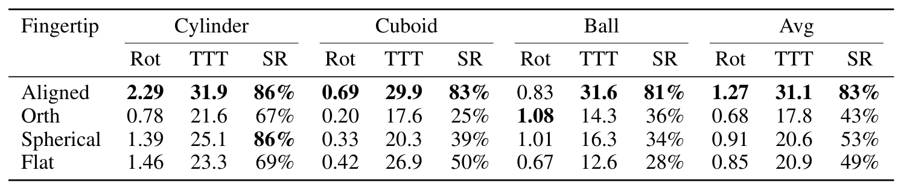

通过强化学习与机械设计先验实现鲁棒手内操作Robust In-Hand Manipulation via Priors in Reinforcement Learning and Mechanical Design
属于操作与机械设计而非空间定位，但将经典几何先验嵌入学习和硬件的思路具有一般机器人参考价值。
一句话工作总结
把全局抓取质量写入强化学习奖励，并以指尖曲率机械先验共同提高无外部感知手内滚动鲁棒性。
摘要
本文为无外部感知的多指手内滚动引入两类互补物理先验：由经典抓取分析导出的全局抓取质量先验作为稠密奖励，鼓励接触点分布良好并提高最差情况 wrench resistance；基于指尖曲率的局部接触几何先验则通过机械形态引导任务方向滚动并减少离轴漂移。三种物体、四种手掌方向上的实验显示，两类先验可改善旋转效率、抓取稳定性、抗扰能力及 Sim-to-Real 迁移。
In-hand manipulation without external sensing is challenging due to uncertainties from finger-object contacts and disturbances by gravity. While reinforcement learning has shown promise in learning complex finger gaiting, existing approaches do not prioritize maintaining well-conditioned grasps for sustained manipulation. We introduce two complementary physics priors for robust in-hand rolling: a global grasp-quality prior derived from classical grasp analysis and a local contact-geometry prior based on fingertip curvature. The grasp-quality prior is used as a dense reward-shaping term that encourages well-distributed contacts with improved worst-case wrench resistance. The contact-geometry prior is expressed in the fingertip geometry that mechanically shapes the contact interface toward task-aligned rolling while reducing off-axis drift. We evaluate the effect of these priors on learning in-hand rolling manipulation for a multifingered robotic hand manipulating three different objects at four palm orientations. Results show significant improvement in rotation efficiency, grasp stability, and disturbance rejection, suggesting that physics priors embedded in both learning and fingertip morphology improve task robustness and sim-to-real transfer. An overview video can be found at https://youtu.be/pdd1wHxQnJM?si=dM-U5kiiPTYsk3Pk.
中文解读摘录
图表/页面预览
{kind=link}

{kind=link}

{kind=link}

{kind=link}

{kind=link}

{kind=link}

{kind=link}
